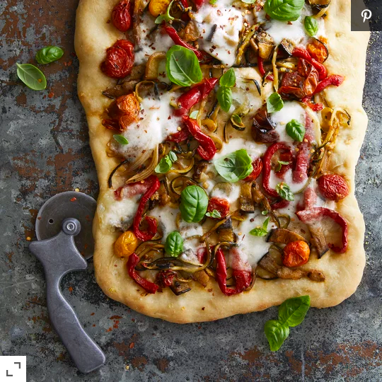

Home
Ratatouille Flatbread

Description: It is ratatouille that has been put on flatbread
With pre-made pizza dough, some mozzarella, and basil, you've got the recipe for a fantastic vegetarian flatbread showcasing our favorite shortcut ratatouille.
Ingredients
- 1 pinch cornmeal
- 1 (16 ounce) package refrigerated pizza dough
- 1 tablespoon olive oil
- 1 1/2 cups Spiralized Sheet-Pan Ratatouille, or other prepared ratatouille
- 4 ounces fresh mozzarella cheese, sliced
- 1/2 cup thinly sliced fresh basil
- 1 teaspoon balsamic glaze (Optional)
- 1 pinch red pepper flakes, or to taste
Steps
- Preheat the oven to 450 degrees F (230 degrees C). Lightly grease a baking sheet; sprinkle with cornmeal.
- Roll dough into a 10x12-inch rectangle or oval on a lightly floured surface. Transfer to the prepared baking sheet. Brush with oil. Top with ratatouille and mozzarella.
- Bake in the preheated oven until crust is golden, about 15 minutes. Sprinkle with basil. Drizzle with balsamic vinegar glaze and top with red pepper flakes. Cut into 8 slices.